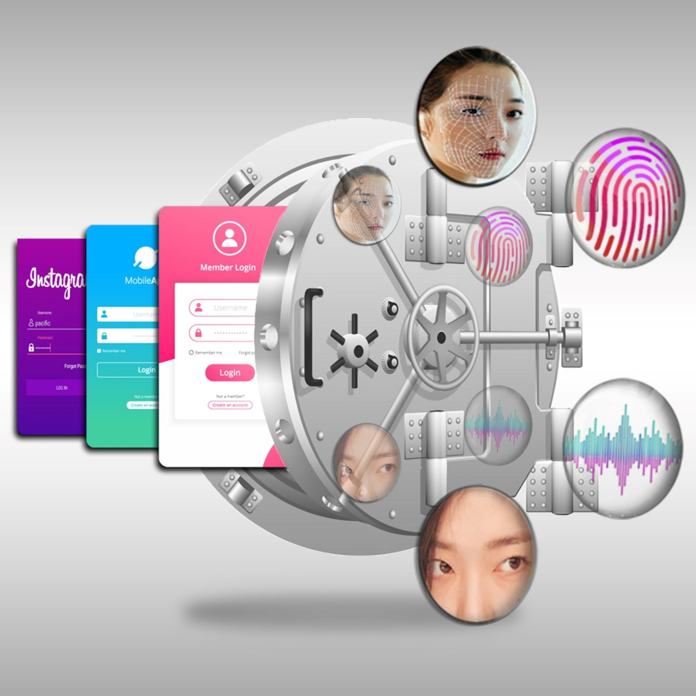

About

Our Product
We develop IOT devices for use in the home as well as for the industrial use. Bio-Lock is our IOT device for smart home automation which provides safety, security, convenience and privacy, at the minimal cost using existing infrastructure. These IOT devices are controlled over Wi-Fi / Bluetooth using mobile app. AI tools are provided for pattern analysis and auditing.
Info
In today’s busy world convenience without compromising safety, security, and privacy, at the minimal cost using existing infrastructure is a necessity. The convenience of remotely securing access with multi-level authorization to homes, offices, garages, automobiles, lockers (locking or unlocking doors from anywhere), granting temporary access to guests or service providers by generating temporary access codes, and receiving real-time notifications about entry and exit activities (activity logs for audit) are the necessities. This remotely controlled UNIVERSAL biometric locking system, the specially designed IOT device, converts any brand existing electronic and electrical locks in homes, automobiles, garages, bank lockers into remotely controlled biometric locks. So, it can be sold as an add-on product with any brand electrical and electronic locks. Thus able to scale product sales and adoption using existing retail channels for the electrical locks. These biometric locks can be operated using mobile app over Wi-Fi, cellular or Bluetooth using any or all of the biometrics like IRIS scan, face recognition, voice recognition, and finger prints. Like in bank lockers, it also supports multi-level authorizations using biometric authentications from more than one owners (supervisor and user) for the same lock. This biometric lock provides activity logs for audit by means of push notifications for access attempts, entry and exit logs, battery status, and alerts. Specially designed AI tool are used on activity logs for auditing and pattern analysis.
Convenience
Mobile App Integration
Remotely controlling specially designed universal IOT device over Wi-Fi / Cellular / Bluetooth using mobile App
Activity logs for audit: Push notifications for access attempts, entry and exit logs, battery status, and alerts.
Sample Activity Log: Create Link to below logs:
Minimal cost: universal biometric locking system, converts existing electronic and electrical locks in homes, automobiles, garages, bank lockers into biometric locks
UNBREKABLE safety and security
Secured using biometrics like IRIS scan, face recognition, voice recognition, and finger prints
Multi-level authorization support like in the bank lockers using biometric authentications from more than one owners (supervisor and user) for the same lock
Uniqueness
Safety and security using Biometrics like IRIS scans, face recognition, voice recognition and finger printsCan convert ANY brand electrical locks into remotely controllable biometric locks. Thus can utilize existing sales channels of ANY brand electrical locks for scaling the business (sales as well as product adoption)
Multi-user Multi-access level support: Accommodates multiple users with customizable access/ authorization levels at the same time
Activity Logs for audit: Provides locking and unlocking notification alerts listing date/time, method and name of person locking or unlocking
Pattern analysis and auditing using AI: Use AI tool on activity logs for auditing and pattern analysis
Plug and Play device: Easy installable small device that can integrate with other security and smart building technologies
Increased efficiency: Streamline access control for employees, visitors and authorized personnel